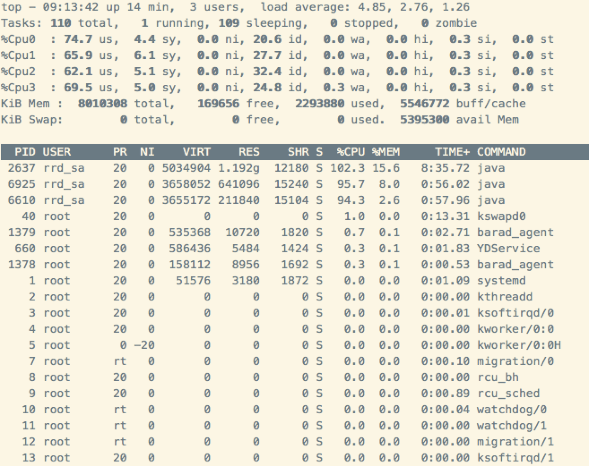
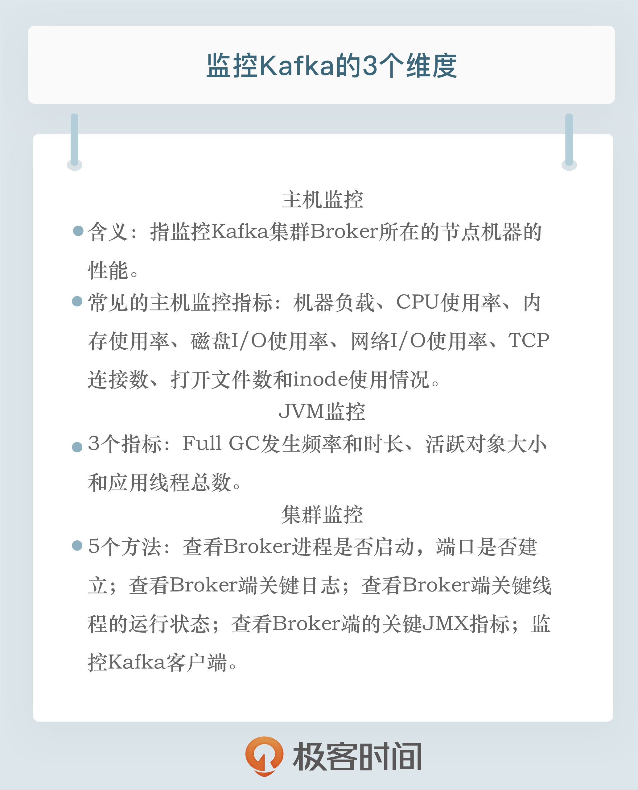

- 00 开篇词 为什么要学习Kafka？.md
- 01 消息引擎系统ABC.md
- 02 一篇文章带你快速搞定Kafka术语.md
- 03 Kafka只是消息引擎系统吗？.md
- 04 我应该选择哪种Kafka？.md
- 05 聊聊Kafka的版本号.md
- 06 Kafka线上集群部署方案怎么做？.md
- 07 最最最重要的集群参数配置（上）.md
- 08 最最最重要的集群参数配置（下）.md
- 09 生产者消息分区机制原理剖析.md
- 10 生产者压缩算法面面观.md
- 11 无消息丢失配置怎么实现？.md
- 12 客户端都有哪些不常见但是很高级的功能？.md
- 13 Java生产者是如何管理TCP连接的？.md
- 14 幂等生产者和事务生产者是一回事吗？.md
- 15 消费者组到底是什么？.md
- 16 揭开神秘的“位移主题”面纱.md
- 17 消费者组重平衡能避免吗？.md
- 18 Kafka中位移提交那些事儿.md
- 19 CommitFailedException异常怎么处理？.md
- 20 多线程开发消费者实例.md
- 21 Java 消费者是如何管理TCP连接的.md
- 22 消费者组消费进度监控都怎么实现？.md
- 23 Kafka副本机制详解.md
- 24 请求是怎么被处理的？.md
- 25 消费者组重平衡全流程解析.md
- 26 你一定不能错过的Kafka控制器.md
- 27 关于高水位和Leader Epoch的讨论.md
- 28 主题管理知多少.md
- 29 Kafka动态配置了解下？.md
- 30 怎么重设消费者组位移？.md
- 31 常见工具脚本大汇总.md
- 32 KafkaAdminClient：Kafka的运维利器.md
- 33 Kafka认证机制用哪家？.md
- 34 云环境下的授权该怎么做？.md
- 35 跨集群备份解决方案MirrorMaker.md
- 36 你应该怎么监控Kafka？.md
- 37 主流的Kafka监控框架.md
- 38 调优Kafka，你做到了吗？.md
- 39 从0搭建基于Kafka的企业级实时日志流处理平台.md
- 40 Kafka Streams与其他流处理平台的差异在哪里？.md
- 41 Kafka Streams DSL开发实例.md
- 42 Kafka Streams在金融领域的应用.md
- 加餐 搭建开发环境、阅读源码方法、经典学习资料大揭秘.md
- 结束语 以梦为马，莫负韶华！.md
36 你应该怎么监控Kafka？
你好，我是胡夕。今天我要和你分享的主题是：如何监控 Kafka。
监控 Kafka，历来都是个老大难的问题。无论是在我维护的微信公众号，还是 Kafka QQ 群里面，大家问得最多的问题，一定是 Kafka 的监控。大家提问的内容看似五花八门，但真正想了解的，其实都是监控这点事，也就是我应该监控什么，怎么监控。那么今天，我们就来详细聊聊这件事。
我个人认为，和头疼医头、脚疼医脚的问题类似，在监控 Kafka 时，如果我们只监控 Broker 的话，就难免以偏概全。单个 Broker 启动的进程虽然属于 Kafka 应用，但它也是一个普通的 Java 进程，更是一个操作系统进程。因此，我觉得有必要从 Kafka 主机、JVM 和 Kafka 集群本身这三个维度进行监控。
主机监控
主机级别的监控，往往是揭示线上问题的第一步。所谓主机监控，指的是监控 Kafka 集群 Broker 所在的节点机器的性能。通常来说，一台主机上运行着各种各样的应用进程，这些进程共同使用主机上的所有硬件资源，比如 CPU、内存或磁盘等。
常见的主机监控指标包括但不限于以下几种：
- 机器负载（Load）
- CPU 使用率
- 内存使用率，包括空闲内存（Free Memory）和已使用内存（Used Memory）
- 磁盘 I/O 使用率，包括读使用率和写使用率
- 网络 I/O 使用率
- TCP 连接数
- 打开文件数
- inode 使用情况
考虑到我们并不是要系统地学习调优与监控主机性能，因此我并不打算对上面的每一个指标都进行详细解释，我重点分享一下机器负载和 CPU 使用率的监控方法。我会以 Linux 平台为例来进行说明，其他平台应该也是类似的。
首先，我们来看一张图片。我在 Kafka 集群的某台 Broker 所在的主机上运行 top 命令，输出的内容如下图所示：

在图片的右上角，我们可以看到 load average 的 3 个值：4.85，2.76 和 1.26，它们分别代表过去 1 分钟、过去 5 分钟和过去 15 分钟的 Load 平均值。在这个例子中，我的主机总共有 4 个 CPU 核，但 Load 值却达到了 4.85，这就说明，一定有进程暂时“抢不到”任何 CPU 资源。同时，Load 值一直在增加，也说明这台主机上的负载越来越大。
举这个例子，其实我真正想说的是 CPU 使用率。很多人把 top 命令中“%CPU”列的输出值当作 CPU 使用率。比如，在上面这张图中，PID 为 2637 的 Java 进程是 Broker 进程，它对应的“%CPU”的值是 102.3。你不要认为这是 CPU 的真实使用率，这列值的真实含义是进程使用的所有 CPU 的平均使用率，只是 top 命令在显示的时候转换成了单个 CPU。因此，如果是在多核的主机上，这个值就可能会超过 100。在这个例子中，我的主机有 4 个 CPU 核，总 CPU 使用率是 102.3，那么，平均每个 CPU 的使用率大致是 25%。
JVM 监控
除了主机监控之外，另一个重要的监控维度就是 JVM 监控。Kafka Broker 进程是一个普通的 Java 进程，所有关于 JVM 的监控手段在这里都是适用的。
监控 JVM 进程主要是为了让你全面地了解你的应用程序（Know Your Application）。具体到 Kafka 而言，就是全面了解 Broker 进程。比如，Broker 进程的堆大小（HeapSize）是多少、各自的新生代和老年代是多大？用的是什么 GC 回收器？这些监控指标和配置参数林林总总，通常你都不必全部重点关注，但你至少要搞清楚 Broker 端 JVM 进程的 Minor GC 和 Full GC 的发生频率和时长、活跃对象的总大小和 JVM 上应用线程的大致总数，因为这些数据都是你日后调优 Kafka Broker 的重要依据。
我举个简单的例子。假设一台主机上运行的 Broker 进程在经历了一次 Full GC 之后，堆上存活的活跃对象大小是 700MB，那么在实际场景中，你几乎可以安全地将老年代堆大小设置成该数值的 1.5 倍或 2 倍，即大约 1.4GB。不要小看 700MB 这个数字，它是我们设定 Broker 堆大小的重要依据！
很多人会有这样的疑问：我应该怎么设置 Broker 端的堆大小呢？其实，这就是最合理的评估方法。试想一下，如果你的 Broker 在 Full GC 之后存活了 700MB 的数据，而你设置了堆大小为 16GB，这样合理吗？对一个 16GB 大的堆执行一次 GC 要花多长时间啊？！
因此，我们来总结一下。要做到 JVM 进程监控，有 3 个指标需要你时刻关注：
- Full GC 发生频率和时长。这个指标帮助你评估 Full GC 对 Broker 进程的影响。长时间的停顿会令 Broker 端抛出各种超时异常。
- 活跃对象大小。这个指标是你设定堆大小的重要依据，同时它还能帮助你细粒度地调优 JVM 各个代的堆大小。
- 应用线程总数。这个指标帮助你了解 Broker 进程对 CPU 的使用情况。
总之，你对 Broker 进程了解得越透彻，你所做的 JVM 调优就越有效果。
谈到具体的监控，前两个都可以通过 GC 日志来查看。比如，下面的这段 GC 日志就说明了 GC 后堆上的存活对象大小。
2019-07-30T09:13:03.809+0800: 552.982: [GC cleanup 827M->645M(1024M), 0.0019078 secs]
这个 Broker JVM 进程默认使用了 G1 的 GC 算法，当 cleanup 步骤结束后，堆上活跃对象大小从 827MB 缩减成 645MB。另外，你可以根据前面的时间戳来计算每次 GC 的间隔和频率。
自 0.9.0.0 版本起，社区将默认的 GC 收集器设置为 G1，而 G1 中的 Full GC 是由单线程执行的，速度非常慢。因此，你一定要监控你的 Broker GC 日志，即以 kafkaServer-gc.log 开头的文件。注意不要出现 Full GC 的字样。一旦你发现 Broker 进程频繁 Full GC，可以开启 G1 的 -XX:+PrintAdaptiveSizePolicy 开关，让 JVM 告诉你到底是谁引发了 Full GC。
集群监控
说完了主机和 JVM 监控，现在我来给出监控 Kafka 集群的几个方法。
1. 查看 Broker 进程是否启动，端口是否建立。
千万不要小看这一点。在很多容器化的 Kafka 环境中，比如使用 Docker 启动 Kafka Broker 时，容器虽然成功启动了，但是里面的网络设置如果配置有误，就可能会出现进程已经启动但端口未成功建立监听的情形。因此，你一定要同时检查这两点，确保服务正常运行。
2. 查看 Broker 端关键日志。
这里的关键日志，主要涉及 Broker 端服务器日志 server.log，控制器日志 controller.log 以及主题分区状态变更日志 state-change.log。其中，server.log 是最重要的，你最好时刻对它保持关注。很多 Broker 端的严重错误都会在这个文件中被展示出来。因此，如果你的 Kafka 集群出现了故障，你要第一时间去查看对应的 server.log，寻找和定位故障原因。
3. 查看 Broker 端关键线程的运行状态。
这些关键线程的意外挂掉，往往无声无息，但是却影响巨大。比方说，Broker 后台有个专属的线程执行 Log Compaction 操作，由于源代码的 Bug，这个线程有时会无缘无故地“死掉”，社区中很多 Jira 都曾报出过这个问题。当这个线程挂掉之后，作为用户的你不会得到任何通知，Kafka 集群依然会正常运转，只是所有的 Compaction 操作都不能继续了，这会导致 Kafka 内部的位移主题所占用的磁盘空间越来越大。因此，我们有必要对这些关键线程的状态进行监控。
可是，一个 Kafka Broker 进程会启动十几个甚至是几十个线程，我们不可能对每个线程都做到实时监控。所以，我跟你分享一下我认为最重要的两类线程。在实际生产环境中，监控这两类线程的运行情况是非常有必要的。
- Log Compaction 线程，这类线程是以 kafka-log-cleaner-thread 开头的。就像前面提到的，此线程是做日志 Compaction 的。一旦它挂掉了，所有 Compaction 操作都会中断，但用户对此通常是无感知的。
- 副本拉取消息的线程，通常以 ReplicaFetcherThread 开头。这类线程执行 Follower 副本向 Leader 副本拉取消息的逻辑。如果它们挂掉了，系统会表现为对应的 Follower 副本不再从 Leader 副本拉取消息，因而 Follower 副本的 Lag 会越来越大。
不论你是使用 jstack 命令，还是其他的监控框架，我建议你时刻关注 Broker 进程中这两类线程的运行状态。一旦发现它们状态有变，就立即查看对应的 Kafka 日志，定位原因，因为这通常都预示会发生较为严重的错误。
4. 查看 Broker 端的关键 JMX 指标。
Kafka 提供了超多的 JMX 指标供用户实时监测，我来介绍几个比较重要的 Broker 端 JMX 指标：
- BytesIn/BytesOut：即 Broker 端每秒入站和出站字节数。你要确保这组值不要接近你的网络带宽，否则这通常都表示网卡已被“打满”，很容易出现网络丢包的情形。
- NetworkProcessorAvgIdlePercent：即网络线程池线程平均的空闲比例。通常来说，你应该确保这个 JMX 值长期大于 30%。如果小于这个值，就表明你的网络线程池非常繁忙，你需要通过增加网络线程数或将负载转移给其他服务器的方式，来给该 Broker 减负。
- RequestHandlerAvgIdlePercent：即 I/O 线程池线程平均的空闲比例。同样地，如果该值长期小于 30%，你需要调整 I/O 线程池的数量，或者减少 Broker 端的负载。
- UnderReplicatedPartitions：即未充分备份的分区数。所谓未充分备份，是指并非所有的 Follower 副本都和 Leader 副本保持同步。一旦出现了这种情况，通常都表明该分区有可能会出现数据丢失。因此，这是一个非常重要的 JMX 指标。
- ISRShrink/ISRExpand：即 ISR 收缩和扩容的频次指标。如果你的环境中出现 ISR 中副本频繁进出的情形，那么这组值一定是很高的。这时，你要诊断下副本频繁进出 ISR 的原因，并采取适当的措施。
- ActiveControllerCount：即当前处于激活状态的控制器的数量。正常情况下，Controller 所在 Broker 上的这个 JMX 指标值应该是 1，其他 Broker 上的这个值是 0。如果你发现存在多台 Broker 上该值都是 1 的情况，一定要赶快处理，处理方式主要是查看网络连通性。这种情况通常表明集群出现了脑裂。脑裂问题是非常严重的分布式故障，Kafka 目前依托 ZooKeeper 来防止脑裂。但一旦出现脑裂，Kafka 是无法保证正常工作的。
其实，Broker 端还有很多很多 JMX 指标，除了上面这些重要指标，你还可以根据自己业务的需要，去官网查看其他 JMX 指标，把它们集成进你的监控框架。
5. 监控 Kafka 客户端。
客户端程序的性能同样需要我们密切关注。不管是生产者还是消费者，我们首先要关心的是客户端所在的机器与 Kafka Broker 机器之间的网络往返时延（Round-Trip Time，RTT）。通俗点说，就是你要在客户端机器上 ping 一下 Broker 主机 IP，看看 RTT 是多少。
我曾经服务过一个客户，他的 Kafka 生产者 TPS 特别低。我登到机器上一看，发现 RTT 是 1 秒。在这种情况下，无论你怎么调优 Kafka 参数，效果都不会太明显，降低网络时延反而是最直接有效的办法。
除了 RTT，客户端程序也有非常关键的线程需要你时刻关注。对于生产者而言，有一个以 kafka-producer-network-thread 开头的线程是你要实时监控的。它是负责实际消息发送的线程。一旦它挂掉了，Producer 将无法正常工作，但你的 Producer 进程不会自动挂掉，因此你有可能感知不到。对于消费者而言，心跳线程事关 Rebalance，也是必须要监控的一个线程。它的名字以 kafka-coordinator-heartbeat-thread 开头。
除此之外，客户端有一些很重要的 JMX 指标，可以实时告诉你它们的运行情况。
从 Producer 角度，你需要关注的 JMX 指标是 request-latency，即消息生产请求的延时。这个 JMX 最直接地表征了 Producer 程序的 TPS；而从 Consumer 角度来说，records-lag 和 records-lead 是两个重要的 JMX 指标。我们在专栏[第 22 讲]解释过这两个指标的含义，这里我就不再赘述了。总之，它们直接反映了 Consumer 的消费进度。如果你使用了 Consumer Group，那么有两个额外的 JMX 指标需要你关注下，一个是 join rate，另一个是 sync rate。它们说明了 Rebalance 的频繁程度。如果在你的环境中，它们的值很高，那么你就需要思考下 Rebalance 频繁发生的原因了。
小结
好了，我们来小结一下。今天，我介绍了监控 Kafka 的方方面面。除了监控 Kafka 集群，我还推荐你从主机和 JVM 的维度进行监控。对主机的监控，往往是我们定位和发现问题的第一步。JVM 监控同样重要。要知道，很多 Java 进程碰到的性能问题是无法通过调整 Kafka 参数是解决的。最后，我罗列了一些比较重要的 Kafka JMX 指标。在下一讲中，我会专门介绍一下如何使用各种工具来查看这些 JMX 指标。
